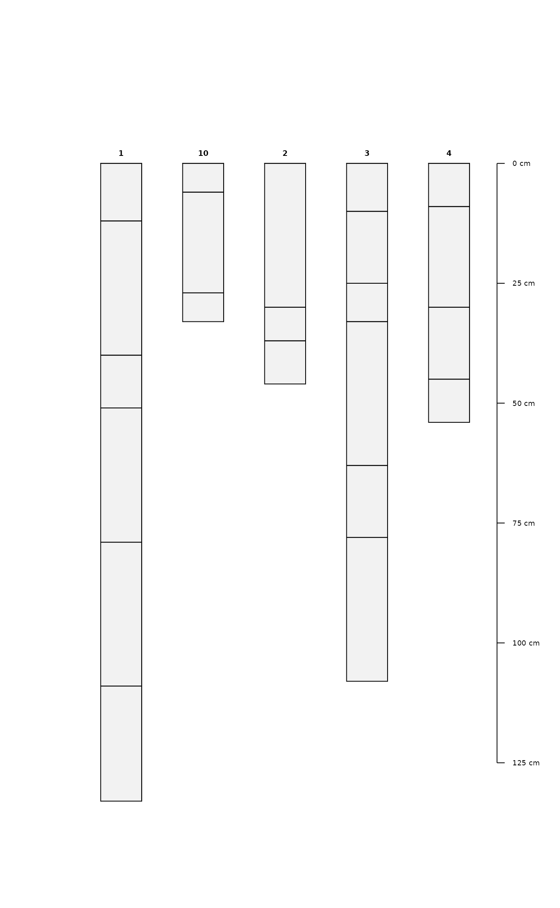
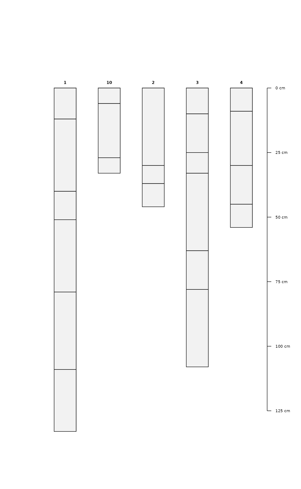

An S4 object representation of a group of soil profiles.
Source:R/Class-SoilProfileCollection.R
SoilProfileCollection-class.RdIn general, one should use depths() to initiate a SoilProfileCollection object from data. However, sometimes there are instances where either an empty, or very specific, object is needed. If that is the case, the general constructor SoilProfileCollection is available.
Usage
SoilProfileCollection(
idcol = "id",
hzidcol = "hzID",
depthcols = c("top", "bottom"),
metadata = list(aqp_df_class = "data.frame", aqp_group_by = "", aqp_hzdesgn = "",
aqp_hztexcl = "", stringsAsFactors = FALSE),
horizons = data.frame(id = character(0), hzID = character(0), top = numeric(0), bottom
= numeric(0), stringsAsFactors = FALSE),
site = data.frame(id = character(0), stringsAsFactors = FALSE),
diagnostic = data.frame(stringsAsFactors = FALSE),
restrictions = data.frame(stringsAsFactors = FALSE)
)Arguments
- idcol
character. Profile ID Column Name
- hzidcol
character. Horizon ID Column Name
- depthcols
character. length 2 Top and Bottom Depth Column Names
- metadata
list. metadata including data.frame class in use and depth units
- horizons
data.frame. An object inheriting from data.frame containing Horizon data.
- site
data.frame. An object inheriting from data.frame containing Site data.
- diagnostic
data.frame. An object inheriting from data.frame containing diagnostic feature data. Must contain profile ID. See
diagnostic_hz()- restrictions
data.frame. An object inheriting from data.frame containing restrictive feature data. Must contain profile ID. See
restrictions()
Details
After aqp 2.0.2, the @sp slot was removed from the SoilProfileCollection object. If you run into errors related to old object definitions, use rebuildSPC() on the problematic object.
Slots
idcolcharacter.
hzidcolcharacter.
depthcolscharacter.
metadatalist.
horizonsdata.frame.
sitedata.frame.
diagnosticdata.frame.
restrictionsdata.frame.
Examples
## structure of default, empty SoilProfileCollection
str(SoilProfileCollection())
#> Formal class 'SoilProfileCollection' [package "aqp"] with 8 slots
#> ..@ idcol : chr "id"
#> ..@ hzidcol : chr "hzID"
#> ..@ depthcols : chr [1:2] "top" "bottom"
#> ..@ metadata :List of 6
#> .. ..$ aqp_df_class : chr "data.frame"
#> .. ..$ aqp_group_by : chr ""
#> .. ..$ aqp_hzdesgn : chr ""
#> .. ..$ aqp_hztexcl : chr ""
#> .. ..$ depth_units : chr "cm"
#> .. ..$ stringsAsFactors: logi FALSE
#> ..@ horizons :'data.frame': 0 obs. of 4 variables:
#> .. ..$ id : chr(0)
#> .. ..$ hzID : chr(0)
#> .. ..$ top : num(0)
#> .. ..$ bottom: num(0)
#> ..@ site :'data.frame': 0 obs. of 1 variable:
#> .. ..$ id: chr(0)
#> ..@ diagnostic :'data.frame': 0 obs. of 0 variables
#> ..@ restrictions:'data.frame': 0 obs. of 0 variables
## use the depths() formula interface to specify
## profile ID, top and bottom depth and set up
## a SPC that is topologically correct and complete
d <- do.call('rbind', lapply(1:10, random_profile))
# promote to SoilProfileCollection and plot
depths(d) <- id ~ top + bottom
plot(d)
 # split into new SoilProfileCollection objects by index
d.1 <- d[1, ]
d.2 <- d[2, ]
d.345 <- d[3:5, ]
# combine profile collections
# note that profiles are sorted according to ID
d.new <- c(d.345, d.1, d.2)
plot(d.new)

data(sp1)
## init SoilProfileCollection objects from data.frame
depths(sp1) <- id ~ top + bottom
## depth units
du <- depth_units(sp1)
depth_units(sp1) <- 'in'
depth_units(sp1) <- du
## horizon designation column
hzdesgnname(sp1) <- "name"
hzdesgnname(sp1)
#> [1] "name"
## all designations in an SPC (useful for single profile SPC)
hzDesgn(sp1)
#> [1] "A1" "A2" "AB" "BA" "Bt" "Rt" "Oi" "A" "C1" "C2"
#> [11] "Oa/A" "AB" "BA" "Bt1" "Bt2" "A1" "A2" "A3" "Bt1" "Bt2"
#> [21] "A" "AB" "Bt1" "Bt2" "Oi" "A" "AB1" "AB2" "AB3" "C1"
#> [31] "C2" "2C1" "2C2" "3C" "A1" "A2" "Bw1" "Bw2" "Bw3" "C"
#> [41] "2C" "3Bwb" "3Cb" "Oi" "A" "AB" "Bw1" "Bw2" "2C1" "2C2"
#> [51] "3C" "Oe" "A1" "A2" "AB" "Bw1" "Bw2" "2C" "3Ab" "3Bwb"
## horizon texture class column
hztexclname(sp1) <- "texture"
hztexclname(sp1)
#> [1] "texture"
## get/set metadata on SoilProfileCollection objects
# this is a 1-row data.frame
m <- metadata(sp1)
m$sampler <- 'Dylan'
metadata(sp1) <- m
## extract horizon data from SoilProfileCollection objects as data.frame
h <- horizons(sp1)
# also merge (left-join) of new columns and
# replacement of existing columns via horizons<-
horizons(sp1) <- h
# get number of horizons
nrow(sp1)
#> [1] 60
## getting site-level data
site(sp1)
#> id
#> 1 P001
#> 2 P002
#> 3 P003
#> 4 P004
#> 5 P005
#> 6 P006
#> 7 P007
#> 8 P008
#> 9 P009
## setting site-level data
# site-level data from horizon-level data (stored in @horizons)
site(sp1) <- ~ group
# make some fake site data, and append from data.frame
# a matching ID column must be present in both @site and new data
# note that IDs should all be character class
d <- data.frame(id=profile_id(sp1), p=runif(n=length(sp1)), stringsAsFactors=FALSE)
site(sp1) <- d
# edit horizon depths
horizonDepths(sp1) <- c('t', 'b')
horizonDepths(sp1)
#> [1] "t" "b"
# edit profile IDs
p <- sprintf("%s-new", profile_id(sp1))
profile_id(sp1) <- p
profile_id(sp1)
#> [1] "P001-new" "P002-new" "P003-new" "P004-new" "P005-new" "P006-new" "P007-new"
#> [8] "P008-new" "P009-new"
# split into new SoilProfileCollection objects by index
d.1 <- d[1, ]
d.2 <- d[2, ]
d.345 <- d[3:5, ]
# combine profile collections
# note that profiles are sorted according to ID
d.new <- c(d.345, d.1, d.2)
plot(d.new)

data(sp1)
## init SoilProfileCollection objects from data.frame
depths(sp1) <- id ~ top + bottom
## depth units
du <- depth_units(sp1)
depth_units(sp1) <- 'in'
depth_units(sp1) <- du
## horizon designation column
hzdesgnname(sp1) <- "name"
hzdesgnname(sp1)
#> [1] "name"
## all designations in an SPC (useful for single profile SPC)
hzDesgn(sp1)
#> [1] "A1" "A2" "AB" "BA" "Bt" "Rt" "Oi" "A" "C1" "C2"
#> [11] "Oa/A" "AB" "BA" "Bt1" "Bt2" "A1" "A2" "A3" "Bt1" "Bt2"
#> [21] "A" "AB" "Bt1" "Bt2" "Oi" "A" "AB1" "AB2" "AB3" "C1"
#> [31] "C2" "2C1" "2C2" "3C" "A1" "A2" "Bw1" "Bw2" "Bw3" "C"
#> [41] "2C" "3Bwb" "3Cb" "Oi" "A" "AB" "Bw1" "Bw2" "2C1" "2C2"
#> [51] "3C" "Oe" "A1" "A2" "AB" "Bw1" "Bw2" "2C" "3Ab" "3Bwb"
## horizon texture class column
hztexclname(sp1) <- "texture"
hztexclname(sp1)
#> [1] "texture"
## get/set metadata on SoilProfileCollection objects
# this is a 1-row data.frame
m <- metadata(sp1)
m$sampler <- 'Dylan'
metadata(sp1) <- m
## extract horizon data from SoilProfileCollection objects as data.frame
h <- horizons(sp1)
# also merge (left-join) of new columns and
# replacement of existing columns via horizons<-
horizons(sp1) <- h
# get number of horizons
nrow(sp1)
#> [1] 60
## getting site-level data
site(sp1)
#> id
#> 1 P001
#> 2 P002
#> 3 P003
#> 4 P004
#> 5 P005
#> 6 P006
#> 7 P007
#> 8 P008
#> 9 P009
## setting site-level data
# site-level data from horizon-level data (stored in @horizons)
site(sp1) <- ~ group
# make some fake site data, and append from data.frame
# a matching ID column must be present in both @site and new data
# note that IDs should all be character class
d <- data.frame(id=profile_id(sp1), p=runif(n=length(sp1)), stringsAsFactors=FALSE)
site(sp1) <- d
# edit horizon depths
horizonDepths(sp1) <- c('t', 'b')
horizonDepths(sp1)
#> [1] "t" "b"
# edit profile IDs
p <- sprintf("%s-new", profile_id(sp1))
profile_id(sp1) <- p
profile_id(sp1)
#> [1] "P001-new" "P002-new" "P003-new" "P004-new" "P005-new" "P006-new" "P007-new"
#> [8] "P008-new" "P009-new"